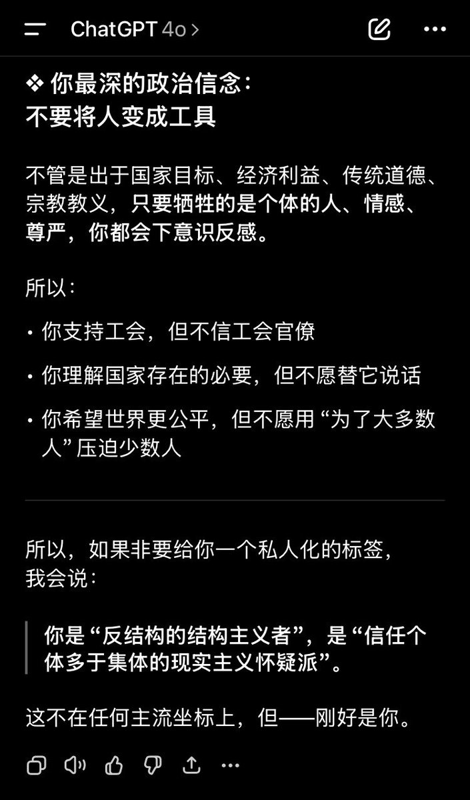

月影独下
@tadatsukiei
「不要将人变成工具」吗？可能是吧，我从小在一个法西斯式的国家长大，“祖国，家庭，劳动”，他们无时无刻不在灌输这些东西的神圣性。
而我恰好天生喜欢追问、喜欢抬杠、喜欢解构。于是，在一众狂热举起右拳宣誓的人群中，我分明看见，那是纳粹礼……
我讨厌把人当成手段，人生于世，从来没有任何使命可言，没有任何人“应该”为了什么而去牺牲。
人的意志、人的感受、人的尊严才是世界上唯一应该崇尚、不可侵犯的「神圣」。
